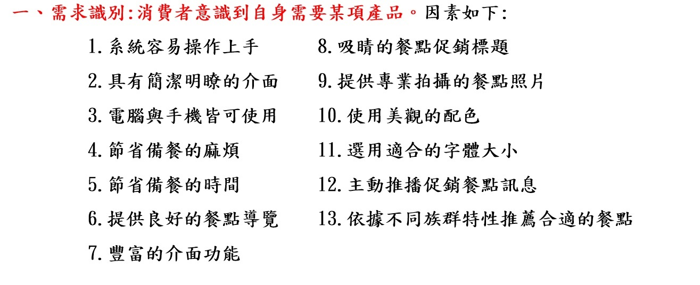
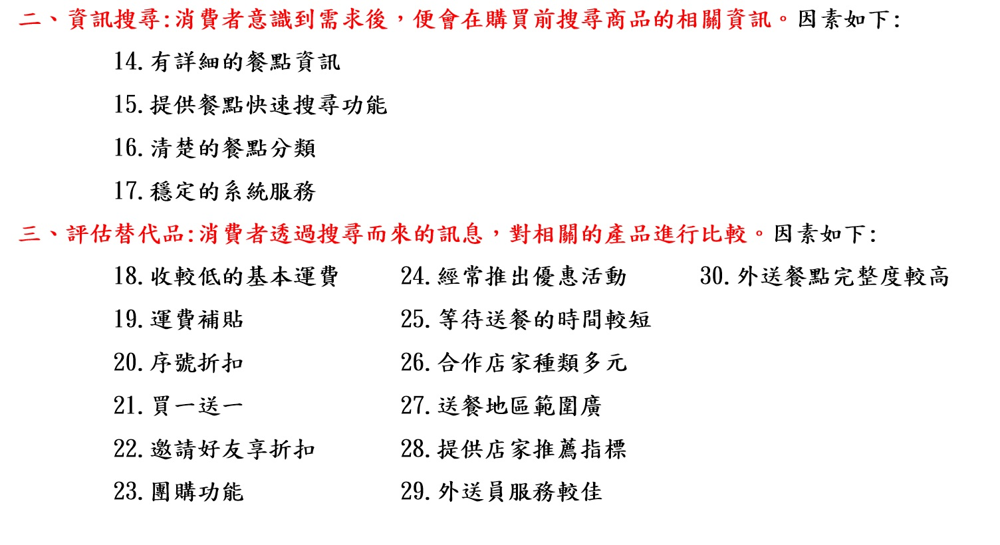
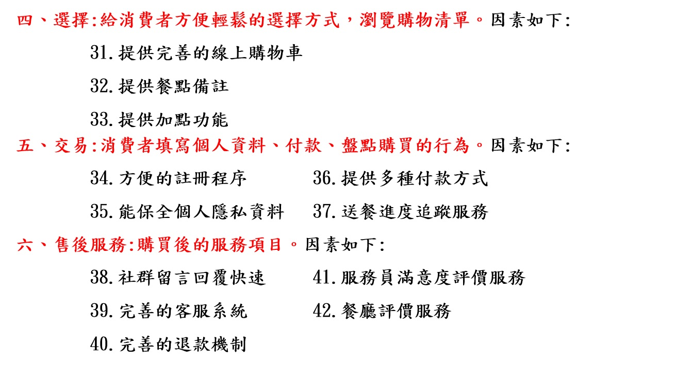
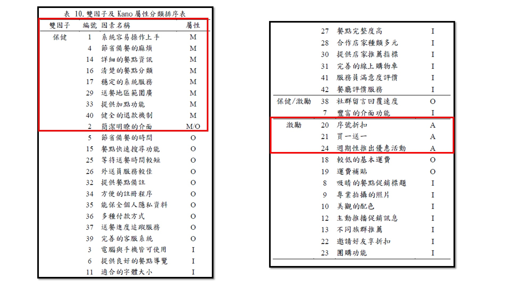

論文
探討消費者使用線上美食外送平台之動機_雙因子理論與Kano模式比較觀點
因素整理
外送服務屬於電商類型，依照EKB對電商模式分為六個階段:需求識別、資訊搜尋、評估替代品、選擇、交易、售後服務。
  研究方法
研究分為兩個階段:
研究一: 使用問卷調查法，詢問使用者42項因素屬於”激勵因素”及”保健因素”。
研究二: 將42項因素分成具備以及不具備的情況，詢問使用者的接受程度，並將其分類為Kano中的 魅力 / 一維 / 當然 / 無差異 屬性。
雙因素問卷收回: 198份有效問卷 => 使用z檢定統計分析得出結果
Kano問卷收回:213份有效問卷 => 使用眾數得出結果
兩項研究結果
外送平台重要的必備因素為:
1.系統容易操作上手,4:節省使用者備餐的麻煩,14.詳細的餐點資訊,16.清楚的餐點分類,
17.穩定的系統服務,29.送餐地區廣泛,33.提供加點功能,40.健全的退款機制,2.簡潔明瞭的介面
激勵使用者使用的重要因素為:
20.序號折扣,21.買一送一,24.週期性推出優惠活動